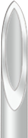
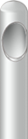

모델로 이마필러는 시술 직후부터 완벽합니다. 이마필러는 필러 시술 중 가장 난이도가 높은 시술 중 하나입니다. 이마는 뼈와 피부 밖에 없는 한정된 공간이기때문에 힘조절을 조금만 잘못해도 울퉁불퉁하게 됩니다. 모델로는 이마필러에서 가장 중요한 '균일하게 주입하는 테크닉'에 능숙합니다. 모델로가 이마필러 시술 직후 완벽한 이유입니다.
이마필러 시 반드시 관자놀이 - 미간 - 콧대를 고려해야 하는 이유?
이마를 했는데 코가 낮아보인다면?
이마를 했는데 해골형 얼굴이 되어있다면?
이마필러 후 울퉁불퉁하다면?
모두 이마필러 시술 전 평가가 제대로 되지 않으면 발생할 수 있는 부작용들입니다.
대표적으로 이마필러 전에는 관자놀이, 코, 미간 등 이마와 연관 된 부위를 미리 파악해야합니다.
예를들면, 이마가 올라오고 나면 평소에 관자가 꺼져있던 분들은 더 관자가 꺼져보입니다.
콧들이 낮은 분도 역시 이마가 올라오니까 콧대가 더 낮아보이는거죠.
상대적으로 단점이 두드러져보일 수 있는 부위는 시술 전 꼭 객관적으로 평가하여 이마 시술 시 밸런스를 조절해야합니다.
바늘은 길이가 짧기 때문에 주사하는 과정에서 울퉁불퉁하게 될 여지가 많습니다. 반면 캐뉼라는 길기때문에 힘조절만 균일하게 할 수 있다면 바늘보다
4~5센치를 길게 넣을 수 있게됩니다. 하지만 캐뉼라로 이마의 곡선을 따라 균일한 두께를 유지하며 뼈막 위로 고르게 주사하는 것이 쉽지
않습니다.
완벽한 테크닉으로 안전하게 완벽한 결과
모델로는 캐뉼라를 사용해서 일정한 상태로 만들어주는 것을 가장 잘합니다. 이것이 이마필러 직후 울퉁불퉁하지 않고 완벽하게 매끈한 이유입니다.
| 일반주사 | 끝이 뭉툭한 캐뉼라 | |
| 이미지 |  |  |
| 길이 | 1.25cm | 4~5cm |
| 주입범위 | 주입할 수 있는 부위 한계로 여러번 찔러야 함 | 한번에 넓은 부위를 주입하여 주입횟수 감소 |
| 균일성 | 울퉁불퉁 가능성 높음 | 매끈하게 시술 가능(숙련돈에 따라 다름) |
| 멍·붓기 | 심함 | 거의 없음 |
| 난이도 | 다루기 쉬움 | 바늘보다 다루기 힘들어 시술자 숙련도 가장 중요 |
시술 전 정확한 평가
자연스러움
멍과 붓기 최소화
체계적인 통증관리